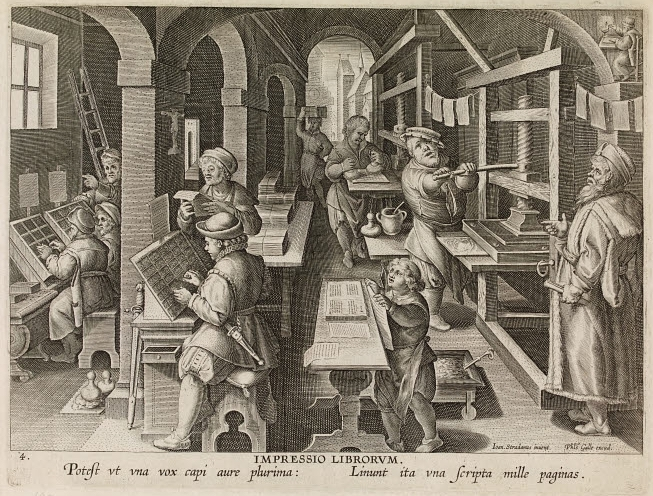

Quire Maker turns any passage of text into a hand-press book. Paste your copy, choose a format, and watch the printer’s sheet fold into a gathering while the pages flow into place; then print imposition sheets ready to fold and sew. It is a window into how early modern books were actually made.

Numbers flagged 180° are set upside down on the sheet. Click any page to spotlight it in both formes.
Press “Impose & preview” to flow your text into the pages.